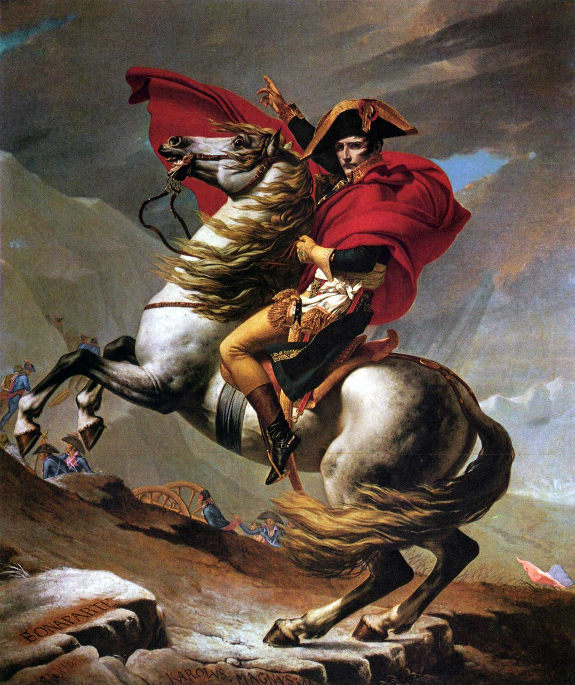
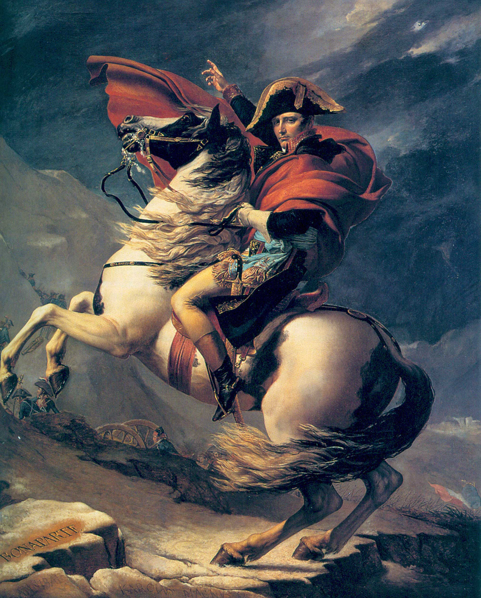

2 #figment Figure
Media referenced within set text.
Examples
Default styling

.figure--border
A figure framed with a border.
.figure--browser
A figure framed with browser chrome. Implementation partially based on Robert Fleischmann’s pen.
.figure--breakout
A figure that visually breaks the container when there is space available.
<figure class="[modifier class]">
<a href="#">
<img src="images/example-1.jpg" alt="Napoleon Crossing the Alps" />
</a>
</figure>2.1 #figment.caption Figure with Caption
Descriptions of figures.
Examples
Default styling
.figure--aside
A figure with the caption as marginalia when possible.
.figure--border
A figure framed with a border.
.figure--browser
A figure framed with browser chrome. (Should respond to vertical media queries to change device.)
.figure--breakout
A figure that visually breaks the container when there is space available.
.figure--overlay
An image with an optional overlayed caption.
.figure--overlay.figure--breakout
A combination of the breakout and overlay modules.
<figure class="[modifier class]">
<img src="images/example-1.jpg" alt="Napoleon Crossing the Alps" />
<figcaption>Jacques-Louis David, <cite>Napoleon Crossing the Alps</cite> or <cite>Bonaparte at the St Bernard Pass</cite>, <time>1800–1</time>. Oil on canvas, 102 × 87<abbr>in</abbr> (260 × 221<abbr>cm</abbr>). Chateau de Malmaison, Rueil-Malmaison.</figcaption>
</figure>2.2 #figment.children Figure with Children
Diptychs, triptychs, etc.
Examples
Default styling


.figure--aside
A figure with the caption as marginalia when possible.
.figure--border
A figure framed with a border.
.figure--breakout
A figure that visually breaks the container when there is space available.
.figure--breakout.figure--border
A combination of the breakout and border modules.
.figure--triptych
Three images shown as equals
.figure--triptych.figure--aside
Three images shown as equals
.figure--triptych.figure--border
Three images shown as equals
<figure class="[modifier class]">
<img src="images/example-1.jpg" alt="Napoleon Crossing the Alps" />
<img src="images/example-5.jpg" alt="Napoleon Crossing the Alps (Belvedere version)" />
<img src="images/example-2.jpg" alt="Napoleon Crossing the Alps (Second version)" />
<figcaption>Three of the five versions of Jacques-Louis David’s <cite>Napoleon Crossing the Alps</cite>: the first Versailles, Belvedere, and second Versailles.</figcaption>
</figure>2.3 #figment.embed Figure with Responsive Embeded Media
Generic embedded media, like a YouTube video or Twitter card.
Examples
Default styling
.figure--aside
Embeded media that has a caption as marginalia, when possible.
.figure--border
Embeded media framed with a border.
.figure--breakout
Embeded media that visually breaks the container when there is space available.
.figure--overlay
Embeded media with an overlayed caption.
.figure--overlay.figure--breakout
A combination of the breakout and overlay modules.
.figure--square
Embeded media scaled or cropped within a square. Works especially well with Vine and Instagram.
<figure class="figure--embed [modifier class]">
<div class="embed-container">
<iframe async defer src="http://player.vimeo.com/video/35152332" frameborder="0" webkitAllowFullScreen mozallowfullscreen allowFullScreen></iframe>
</div>
<figcaption>Hand-painted reproduction of Jacques-Louis David’s <cite>Napoleon Crossing the Alps</cite>, using oil on blank linen canvas.</figcaption>
</figure>2.3.1 #figment.embed.square Figure with Square Embed
A pre-sized embed, like an Instagram photo.
Examples
Default styling
.figure--aside
A figure with the caption as marginalia when possible.
.figure--border
A figure with a border.
<figure class="figure--embed figure--square [modifier class]">
<div class="embed-container">
<iframe async defer src="//instagram.com/p/kz8ibZkn0C/embed/" frameborder="0" scrolling="no" allowtransparency="true"></iframe>
</div>
<figcaption>A contemporary, Kurdish version of <cite>Napoleon Crossing the Alps</cite>, seen on the streets of Arbil.</figcaption>
</figure>